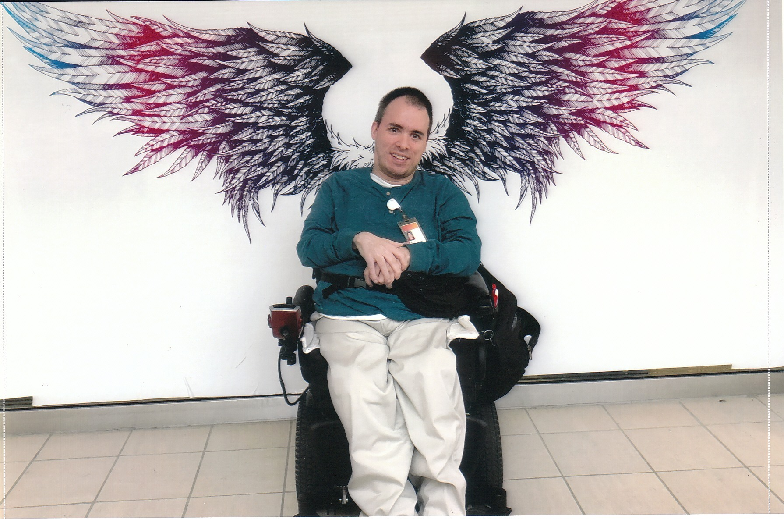

Robert Fayz

Software Development Engineer
A passion for knowledge growth and helping a team get the job done right.
Collaboration and teamwork are necessary to get large scale projects well. Always be willing to learn new skills and take on new challenges and help
colleagues when needed. The experience and projects listed below reflect a career focused on team work. Experience includes both desktop and web
development and knowledge gained from side projects. Operated in both waterfall and kanban style workflows. Strong ability to handle multiple deadlines
for coding and testing assignments with minimal supervision. Skilled communicator.
Skills and Technology:
- C++ (GNU and Microsoft)
- C#
- Angular
- TypeScript
- JSON
- XML
- Academic work with MySQL and PHP
- Acedemic work with Python
- Self Exposure to Java
- Self Exposure to Oracle
|
- Windows Batch Script
- PowerShell
- PVCS source management
- TFS source management
- Azure DevOPS source management
- Git
- Power Automate with Microsoft Teams
- Microsoft Office
- Microsoft Visual Studio (up through 2022)
- Visual Studio Code (Windows and Linux)
|
Experience:
Thomson-Reuters: Ann Arbor, MI 2005-2022:
Software Development Engineer
Primary Role:
Primary responsibility was to work on multiple tax returns per year collaborating with product's assigned analyst to make changes necessary to make tax
calculations compliant to current year’s instructions.
Accomplishments:
-
Managed and maintained multiple products each year meeting deadlines for changing debugging and testing allowing for an on time release of products with
minimal bugs reports during support season improving user experience during tax season.
-
Refactored code in the Connecticut tax product after a rushed development cycle in prior year due to late tax law changes. The resulting code was much
easier to read and maintain for future developers.
- Implemented 3 new tax returns from scratch in first year delivered on time.
-
Modified script used to label all state source code using command line based PVCS version control system allowing it to label multiple states and be
used inside a GUI application eliminating an extra manual step in product rolls.
-
Integrated two existing desktop development tools performing inter-related tasks into one application eliminating steps needed to synchronize data from
two separate sources simplifying development process for product analysts.
-
Volunteered to work on further feature additions and bug fixes to internal tax tools all teams used leading to quality-of-life improvements for product
analysts.
- Aided in development of a web-based replacement for desktop internal tools by porting over front end of one tools to Angular and TypeScript.
-
Rewrote a legacy batch script managing TFS version control tasks to a more modern Powershell implementation to work with code migration to Azure DevOops
fixing broken operations in new source control system.
-
Debugged and maintained web product microservices for more modern web tax product working on both backend code in C#, front end code in Angular and
Typescript, with some integration with legacy C++ code.
-
Guided colleagues through new debugging process for native code inside of a microservice helping to adapt people to new world of web application
debugging with Fiddler and Postman.
- Volunteered to perform cadence process for tax microservices reducing process to one day instead of 2 to 3 days.
- Took on documentation services for knowledge transfer for incoming overseas developers easing onboarding process.
Education:
Bachelor of Science, Computer and Information Science
University of Michigan, Dearborn, MI
Computer Science Option